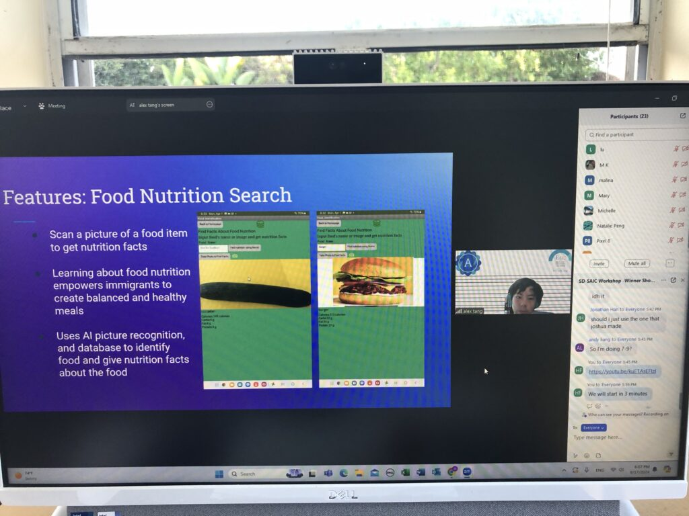
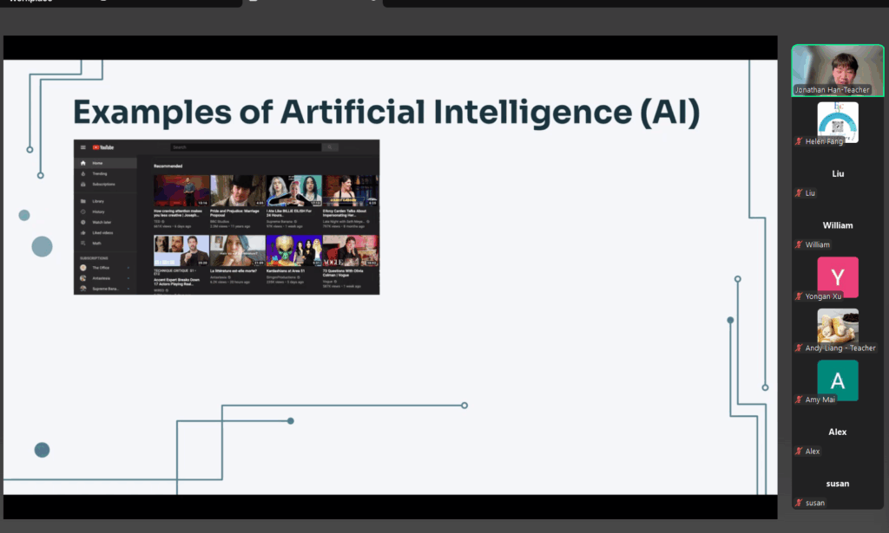
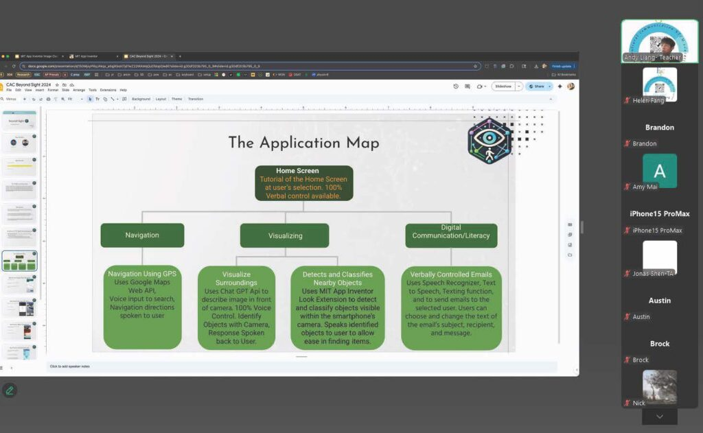
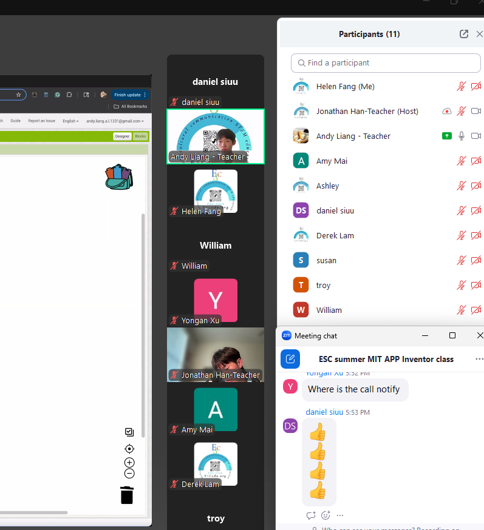
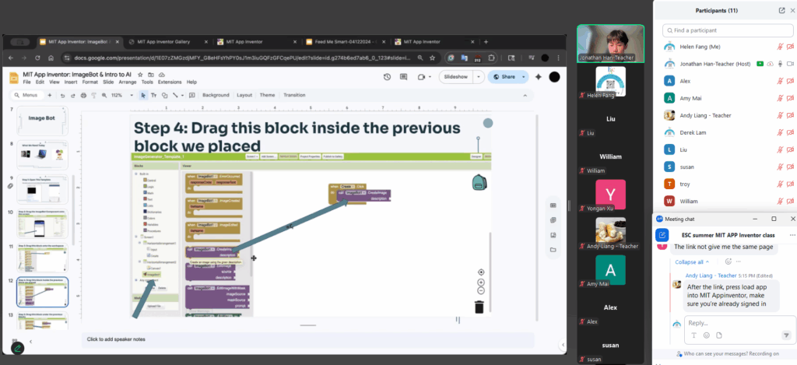
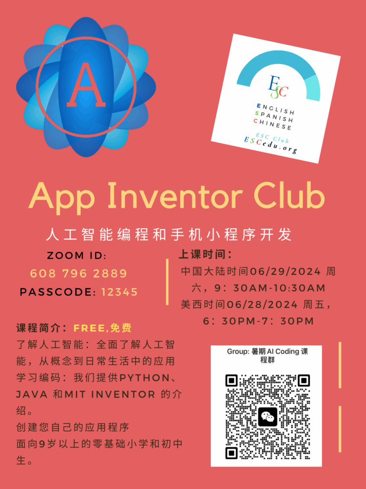
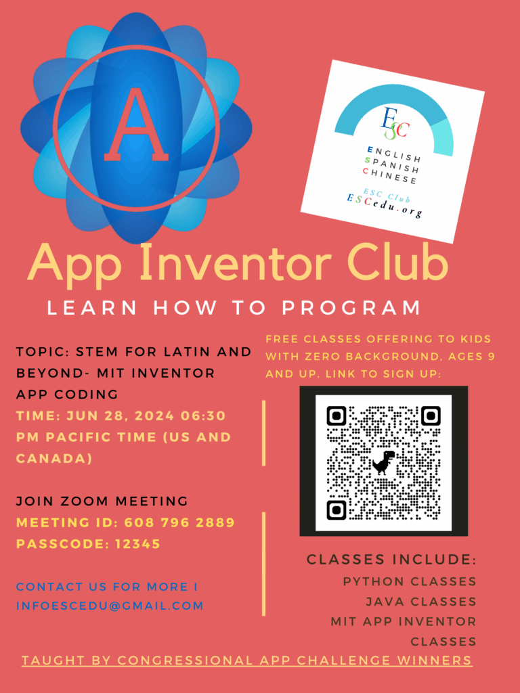
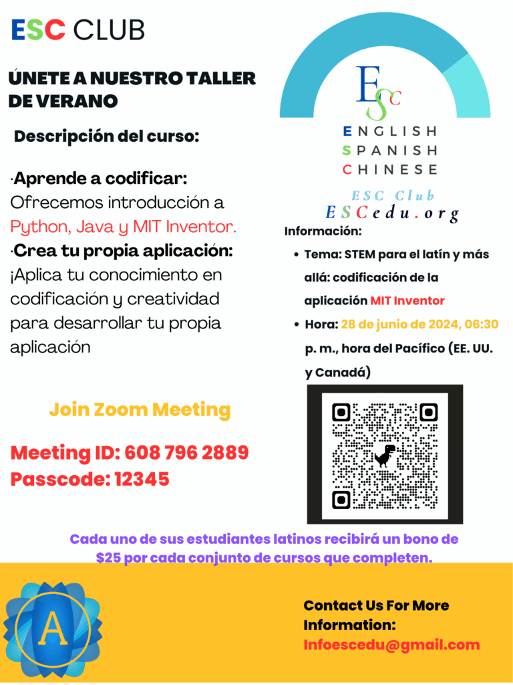

MIT APP Inventor
https://appinventor.mit.edu/explore/ai2/tutorials
MIT App Inventor 是一个直观的可视化编程环境，让每个人——甚至孩子——都能为 Android 手机、iPhone 以及 Android/iOS 平板电脑构建功能完整的应用程序。初学者不到 30 分钟就能做出并运行一个简单的第一款应用。更重要的是，与传统编程环境相比，我们基于积木块的工具能够在更短的时间内创建复杂、高影响力的应用。MIT App Inventor 项目致力于让软件开发大众化，赋能所有人——尤其是年轻人——从技术消费者转变为技术创造者。

课程幻灯片示例
- 2025 夏季课程 — MIT APP Inventor 课程幻灯片：
- MIT App Inventor 入门：https://docs.google.com/presentation/d/1ReyApuO4D_CGZMm8HCO_nQIXqM3O41NP2uz105lFoGI/edit?usp=sharing
- 2 计算器：https://docs.google.com/presentation/d/1OURJHgqqluXscN9UVrOkTTtEQMHJ8hof1fgBu0J24qo/edit?usp=sharing
- Image Bot：https://docs.google.com/presentation/d/1E07zZMGzdjMFY_G8eHFsYhPY0sJ1m3iuGQFzGFCqePU/edit?usp=sharing
- Chatbot：https://docs.google.com/presentation/d/1Sn2NKzk9gg5faedjqxV1rFEprqC3AbjFXCIkGRk9WMk/edit?usp=sharing
- Look Extension：https://docs.google.com/presentation/d/1B84HHE5AUZ1uSLiZWg9Jzk2dSHGIpfALgQnYewdC__g/edit?usp=sharing
在线课程录像示例：
分享链接 — MIT 在线课程视频·入门
https://us06web.zoom.us/rec/share/G3JgO4dMROs7WnBnjGNV0IM8ZK-uNVGht7LoUDWWtqTFL4HnUjq2Ko7juIaN0R6t.M3kaex7j08EaW0f-
密码：36%1=$P^
分享链接 — MIT 在线课程视频·两个计算器
https://us06web.zoom.us/rec/share/8nv_JsA2-VYMd0rRWgr3fcL-yGvOskxvHwvOMk7vuPjZQmtWV3cdVhwyaxduox1o.paSnWDiEQNT_ZE0n
密码：zz&k@D5R
2025 夏季在线课程 — MIT APP Inventor — 以科技为翼
真实案例研究
为了将课堂学习与现实应用相结合，本次夏令营设置了四场案例研究课，展示 ESC Club 竞赛团队开发的获奖应用。每个案例研究都包含演示和分析，向学生展示如何用编程解决社区问题、激发创意创新。
启发未来的创新者
这门课程由 ESC 的成员设计，旨在用前沿的 AI 和编程知识赋能学生，同时降低进入 STEM 的门槛。通过将动手教学与鼓舞人心的案例相结合，夏令营不仅鼓励学员学习编程，更鼓励他们将技术运用于解决社区中的实际问题。




2024 夏季在线课程 — MIT APP Inventor for Latino & Beyond
课程特色
多语言支持：
授课语言以英语为主。同时，为了确保包容性和理解度，每节课都配有三种语言的幻灯片和额外支持：西班牙语、中文和法语。
这种多语言方式有助于打破语言障碍，让不同背景的学生都能学习编程。
../../assets/media/2025/04/IMG_4375.mov
三语助教实时在线：
每节在线课程中，均有掌握三种语言的助教实时提供支持。
这确保学生能用自己习惯的语言即时获得帮助和解答，提升学习体验，营造更具包容性的环境。


